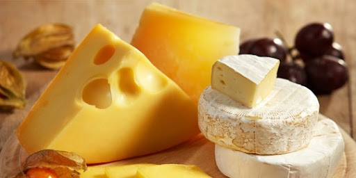
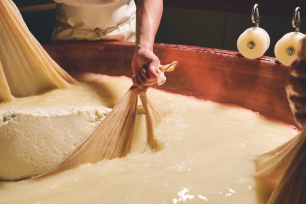
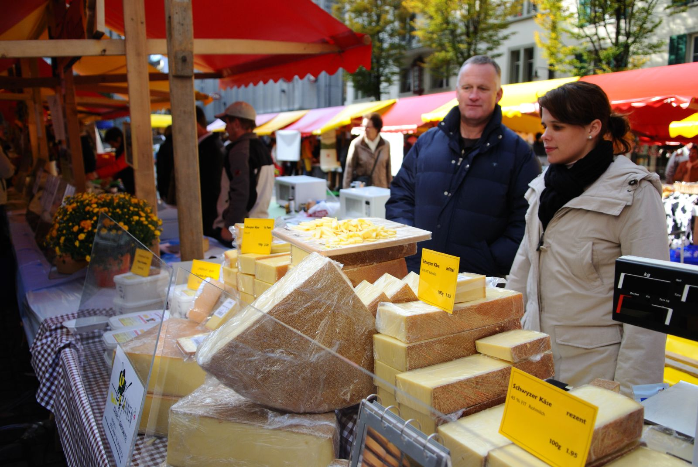

Selamat Datang Di Dunia Keju
Website ini membahas sejarah, jenis, manfaat, dan olahan keju yang populer di seluruh dunia. Keju adalah salah satu produk susu yang sudah ada sejak ribuan tahun yan lalu dan masih digemari hingga sekarang.
Website ini membahas sejarah, jenis, manfaat, dan olahan keju yang populer di seluruh dunia. Keju adalah salah satu produk susu yang sudah ada sejak ribuan tahun yan lalu dan masih digemari hingga sekarang.
|  |
"Apa Itu Keju ?"Keju Adalah Makanan yang terbuat dari susu melalui proses penggumpalan dan fermentasi. Terdapat berbagai macam jenis keju dengan tekstur, rasa, dan aroma yang berbeda-beda. Setiap negara biasanya memiliki keju khasnya sendiri yang mencerminkan budaya dan tradisi kuliner mereke. |
"Bagaimana Keju Dibuat?"Proses pembuatan keju dimulai dengan memanaskan susu dan menambahkan enzim atau rennet untuk menggumpalkan susu. Setelah itu, padatan susu (curd) dipisahkan dari cairan (whey). Curds kemudian dicetak, diproses lebih lanjut, dan kadang-kadang dibiarkan untuk matangnya dalam waktu yang bervariasi. Hasil akhirnya adalah keju dengan tekstur dan rasa yang berbeda-beda. Selengkapnya... |
 |
|  |
"Pengaruh Keju dalam Budaya dan Kuliner"Keju berpengaruh besar dalam kuliner global, membentuk tradisi, ekonomi, dan budaya berbagai negara. Di Eropa, keju menjadi identitas kuliner, sementara di negara lain beradaptasi dengan cita rasa lokal, seperti paneer di India. Globalisasi membuat keju lebih mudah diakses, mendorong inovasi, serta memperkaya masakan internasional dan perekonomian melalui perdagangan serta pariwisata. Selengkapnya... |